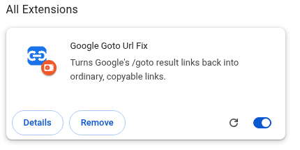
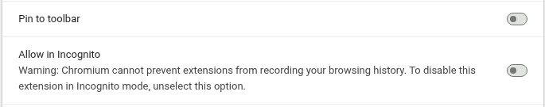

To get started, open a Google Search results page and click the extension's toolbar icon. The blue ON badge means it is active.
If the icon isn't visible, open your browser's extensions menu (the puzzle-piece icon) and pin Google Goto Url Fix to the toolbar.
Chrome requires you to allow each extension in Incognito yourself. To enable this extension in Chrome or Edge:
chrome://extensions in Chrome, or edge://extensions in Edge).

This is optional. When allowed in private browsing, the extension can read Google Search result links and send Google resolution requests there too. Other browsers have their own private-browsing extension settings.
You can close this tab when you're done. The extension's options also let you turn off nearby prefetching.